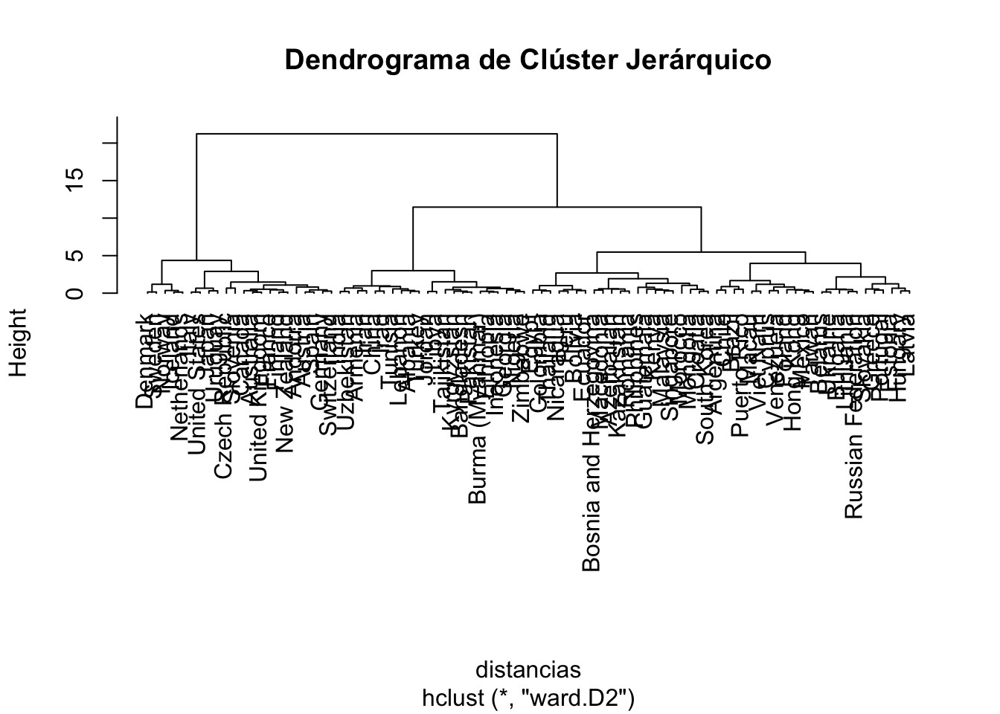
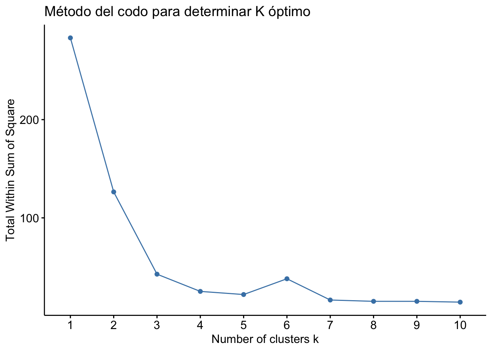

Clusters
Análisis de Clusters
FACULTAD DE CIENCIAS SOCIALES - PUCP
Curso: POL 304 - Estadística para el análisis político 2 | Semestre
2025 - 1
Docente: Marylia Cruz
¿Qué es un clúster?
Un clúster es un grupo de observaciones (casos, personas, países, etc.) que son más similares entre sí que con las observaciones de otros grupos.
En otras palabras, el análisis de clúster busca agrupar los datos de forma que los elementos dentro de cada grupo sean muy parecidos, y entre grupos sean distintos.
Este tipo de análisis es no supervisado, es decir, no parte de etiquetas conocidas (como categorías o clases), sino que descubre patrones ocultos en los datos.
¿Qué es la matriz de distancia?
Para saber qué tan parecidas o diferentes son dos observaciones, usamos una medida de distancia.
La más común es la distancia euclidiana, que es simplemente la distancia “en línea recta” entre dos puntos en un espacio con múltiples dimensiones.
📐 Fórmula de la distancia euclidiana
La distancia euclidiana entre dos observaciones \(A\) y \(B\), con \(n\) variables, se define como:
\[ d(A, B) = \sqrt{(x_1^A - x_1^B)^2 + (x_2^A - x_2^B)^2 + \dots + (x_n^A - x_n^B)^2} \]
Esta fórmula calcula la distancia en línea recta entre los puntos \(A\) y \(B\) en un espacio de \(n\) dimensiones.
Ejemplo
datos <- data.frame(
Pais = c("Perú", "Chile", "Noruega", "Argentina"),
Educacion = c(80, 85, 95, 82),
ConfianzaGobierno = c(30, 35, 85, 28)
)
# Usamos el nombre del país como nombre de fila
rownames(datos) <- datos$Pais
datos_numericos <- datos[, -1] # Quitamos la columna "Pais"distancias <- dist(datos_numericos, method = "euclidean")
as.matrix(distancias)## Perú Chile Noruega Argentina
## Perú 0.000000 7.071068 57.00877 2.828427
## Chile 7.071068 0.000000 50.99020 7.615773
## Noruega 57.008771 50.990195 0.00000 58.463664
## Argentina 2.828427 7.615773 58.46366 0.000000distancias## Perú Chile Noruega
## Chile 7.071068
## Noruega 57.008771 50.990195
## Argentina 2.828427 7.615773 58.463664Objetivo
Aplicar técnicas de análisis de clúster (jerárquico y k-medias) a un conjunto de datos para identificar agrupaciones de observaciones con características similares.
El análisis de clúster es una técnica de clasificación no supervisada que permite agrupar observaciones con base en su similitud. Entre los métodos más comunes están:
Clúster Jerárquico
Clúster Jerárquico: agrupa observaciones de forma aglomerativa o divisiva, creando un dendrograma.
- Este método agrupa las observaciones progresivamente en una estructura en forma de árbol, conocida como dendrograma. Existen dos enfoques:
Aglomerativo (el más usado): parte de cada observación como su propio grupo y las va uniendo.
Divisivo: parte de un solo grupo y lo va dividiendo.
Calcular la matriz de distancias entre todas las observaciones.
Unir los grupos más cercanos (según un criterio de enlace: Ward, promedio, completo, etc.).
Repetir hasta que todos estén en un solo clúster.
Elegir un número de clústeres cortando el dendrograma a cierta altura.
Ventajas
No requiere definir previamente el número de clústeres.
Permite ver cómo se forman los grupos a lo largo del proceso.
Útil para datos pequeños o exploratorios
Desventajas
Poco eficiente para grandes volúmenes de datos.
Decisiones iniciales (como el método de enlace) afectan el resultado.
- Cargar datos
library(rio)
data=import("data_wvs_consolidada.xlsx")rownames(data) <- data$Country- Preparar datos numéricos y escalar
library(dplyr)
# Escalamos los datos para evitar sesgos por diferencias de magnitud
data_numerica <- data %>%
dplyr::select(-Country) %>%
dplyr::select_if(is.numeric)
data_escalada=scale(data_numerica)
data_escalada=as.data.frame(data_escalada)- Calcular matriz de distancias
Calculamos las distancias euclidianas entre todas las observaciones. Esta matriz será la base para formar los grupos.
distancias <- dist(data_escalada, method = "euclidean")- Aplicar clúster jerárquico (método Ward)
Utilizamos el método aglomerativo de Ward (ward.D2), que minimiza la varianza dentro de cada grupo al ir fusionando observaciones.
hc <- hclust(distancias, method = "ward.D2")- Visualizar dendrograma
El dendrograma muestra gráficamente cómo se agrupan las observaciones paso a paso. Podemos elegir el número de clústeres “cortando” el árbol a cierta altura. Aquí sugerimos usar 4 grupos.
plot(hc, hang = -1, main = "Dendrograma de Clúster Jerárquico")
- Añadimos colores para visualizar 4 clústeres
#rect.hclust(hc, k = 4, border = 2:5)6. Cortar en 4 clústeres
Asignamos cada observación a uno de los 4 grupos, según el corte que hicimos en el dendrograma.
grupos <- cutree(hc, k = 4)- Revisamos cuántas observaciones hay en cada grupo
table(grupos) ## grupos
## 1 2 3 4
## 22 22 23 21- Agregar clúster al dataframe original
Agregamos la asignación de clúster como una nueva variable en el conjunto de datos original. Esto permite luego comparar perfiles de grupo.
data_escalada$Cluster <- as.factor(grupos)- Promedios por clúster
Calculamos los promedios de cada variable numérica por clúster para caracterizar a cada grupo y entender qué los diferencia.
library(dplyr)
data_escalada%>%
group_by(Cluster) %>%
summarise(across(where(is.numeric), ~mean(.x, na.rm = TRUE)))## # A tibble: 4 × 5
## Cluster Justificable_Abortion Justificable_Homosexu…¹ Justificable_Sex_bef…² Justificable_Divorce
## <fct> <dbl> <dbl> <dbl> <dbl>
## 1 1 -1.01 -1.09 -1.17 -1.26
## 2 2 1.41 1.42 1.48 1.31
## 3 3 0.0433 -0.00369 0.568 0.295
## 4 4 -0.460 -0.469 -0.160 -0.376
## # ℹ abbreviated names: ¹Justificable_Homosexuality, ²Justificable_Sex_before_marriageClúster K-medias
Clúster K-medias: particiona los datos en k grupos al minimizar la varianza dentro de cada clúster.
Es un método particional: divide directamente los datos en k grupos. Funciona minimizando la variabilidad interna dentro de cada clúster (inercia).
Definir el número de clústeres k.
Inicializar k centros aleatorios.
Asignar cada observación al centro más cercano.
Recalcular los centros como el promedio de las observaciones en cada grupo.
Repetir pasos 3–4 hasta que no cambien los grupos
Ventajas
Muy eficiente en grandes bases de datos.
Fácil de interpretar y aplicar.
Desventajas
Requiere definir k antes de empezar.
Sensible a valores atípicos y a la escala de los datos.
Puede converger a soluciones subóptimas si los centros se inicializan mal (por eso se usa nstart = 25, por ejemplo, para mejorar la solución)
1. Determinar el número óptimo de clústeres
Antes de aplicar k-medias, se recomienda determinar el número óptimo de clústeres. Una técnica muy usada es el método del codo (elbow method), que evalúa la variación dentro de los grupos (WSS).
data_escalada <- na.omit(data_escalada)library(factoextra)## Welcome! Want to learn more? See two factoextra-related books at https://goo.gl/ve3WBafviz_nbclust(data_escalada, kmeans, method = "wss") +
labs(title = "Método del codo para determinar K óptimo")
- Observa en el gráfico el punto donde la curva “deja de bajar bruscamente” — ahí estaría el número ideal de clústeres.
3. Aplicar el algoritmo de k-medias (k = 4)
Usamos kmeans() con k = 4 como ejemplo (puedes ajustar según el gráfico anterior). También se recomienda usar nstart = 25 para mejorar la estabilidad del resultado (intenta 25 inicializaciones distintas).
set.seed(123) # para reproducibilidad
kmeans_result <- kmeans(data_escalada, centers = 4, nstart = 25)Ver número de casos por grupo
kmeans_result$size## [1] 15 16 17 114. Asignar clústeres al dataframe original
Agregamos la asignación del clúster como una nueva columna en el dataframe original. Esto nos permitirá analizar las diferencias entre grupos.
data_escalada$Cluster_kmeans <- as.factor(kmeans_result$cluster)5. Visualización de los clústeres
Graficamos los clústeres usando reducción de dimensiones (PCA) para representar los datos en 2D y colorearlos por clúster.
library(factoextra)
#fviz_cluster(kmeans_result, data = data_escalada,
#palette = "jco",
#ggtheme = theme_minimal(),
#main = "Clústeres K-means")6. Comparar promedios por clúster
Este paso nos ayuda a interpretar cada grupo: qué valores promedio tiene cada clúster en las variables numéricas.
data_escalada %>%
group_by(Cluster_kmeans) %>%
summarise(across(where(is.numeric), ~mean(.x, na.rm = TRUE)))## # A tibble: 4 × 5
## Cluster_kmeans Justificable_Abortion Justificable_Homosexuality Justificable_Sex_before_marriage
## <fct> <dbl> <dbl> <dbl>
## 1 1 -0.153 0.173 0.568
## 2 2 -0.513 -0.363 -0.160
## 3 3 -1.07 -1.10 -1.18
## 4 4 1.18 1.38 1.48
## # ℹ 1 more variable: Justificable_Divorce <dbl># Crear tabla con países y su clúster asignado
tabla_cluster_paises <- data.frame(
Pais = rownames(data_escalada),
Cluster = as.factor(kmeans_result$cluster)
)
# Ver tabla ordenada por clúster
tabla_cluster_paises <- tabla_cluster_paises %>% arrange(Cluster)
# Mostrar la tabla
print(tabla_cluster_paises)## Pais Cluster
## Argentina Argentina 1
## Brazil Brazil 1
## Chile Chile 1
## Cyprus Cyprus 1
## Greece Greece 1
## Hong Kong Hong Kong 1
## Macau Macau 1
## Mexico Mexico 1
## Puerto Rico Puerto Rico 1
## Russian Federation Russian Federation 1
## Slovakia Slovakia 1
## Taiwan Taiwan 1
## Ukraine Ukraine 1
## Venezuela Venezuela 1
## Viet Nam Viet Nam 1
## Bolivia Bolivia 2
## Colombia Colombia 2
## Ecuador Ecuador 2
## Guatemala Guatemala 2
## Kazakhstan Kazakhstan 2
## Kenya Kenya 2
## Malaysia Malaysia 2
## Mongolia Mongolia 2
## Morocco Morocco 2
## Nicaragua Nicaragua 2
## Peru Peru 2
## Philippines Philippines 2
## Romania Romania 2
## Singapore Singapore 2
## South Korea South Korea 2
## Thailand Thailand 2
## Armenia Armenia 3
## Bangladesh Bangladesh 3
## Burma (Myanmar) Burma (Myanmar) 3
## China China 3
## Ethiopia Ethiopia 3
## India India 3
## Indonesia Indonesia 3
## Iran Iran 3
## Jordan Jordan 3
## Kyrgyzstan Kyrgyzstan 3
## Lebanon Lebanon 3
## Libya Libya 3
## Nigeria Nigeria 3
## Pakistan Pakistan 3
## Tunisia Tunisia 3
## Turkey Turkey 3
## Zimbabwe Zimbabwe 3
## Andorra Andorra 4
## Australia Australia 4
## Canada Canada 4
## Czech Republic Czech Republic 4
## Germany Germany 4
## Japan Japan 4
## Netherlands Netherlands 4
## New Zealand New Zealand 4
## United Kingdom United Kingdom 4
## United States United States 4
## Uruguay Uruguay 4